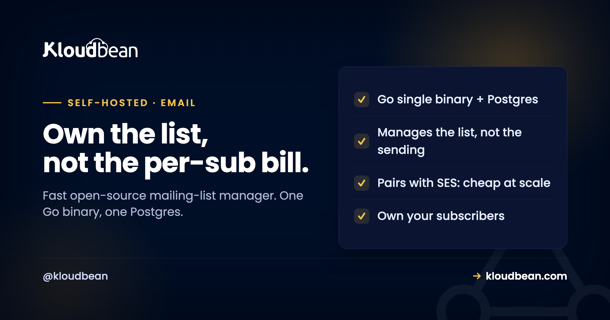

Self-Host Listmonk: Own Your List, but Know It Doesn't Send the Email

Hosted email platforms charge by the subscriber, so the bigger your list gets, the more you pay to own an audience you built. Listmonk is the open-source answer: a fast, self-hosted mailing list and campaign manager that happily handles large lists on modest hardware. It is genuinely excellent, and I recommend it often. But there is one thing you have to understand before you touch it, because getting it wrong is the single most common way people are disappointed: listmonk manages your list and builds your campaigns, it does not actually deliver the email. That last part, deliverability, is still the real work, and no amount of self-hosting makes it free.
Listmonk is a high-performance, open-source, self-hosted newsletter and mailing list manager, shipped as a single Go binary backed by PostgreSQL. It manages subscribers, lists, templates, and campaigns from its own dashboard, and it is refreshingly light to run. The catch to understand first: listmonk does not send email itself. It hands campaigns to an SMTP server or Amazon SES, so you still need a real sending path and real deliverability setup (SPF, DKIM, DMARC, sender reputation). Self-host it when a per-subscriber pricing plan is punishing you and you have the volume to justify pairing listmonk with a cheap sending service like SES. If you want a website with a newsletter attached, that is Ghost's job, not this one.
What Listmonk actually is
A dedicated tool for one job, done very well: managing a list and sending campaigns to it.
Listmonk is a self-hosted newsletter and mailing list manager. From one dashboard you manage subscribers and lists, import and segment them, build campaigns with templates, and track performance. It is open source under the AGPL, written in Go, and shipped as a single binary backed by PostgreSQL. That last detail is a genuine pleasure: where many self-hosted tools are a constellation of services, listmonk is essentially one program and one database. No Redis, no message broker, no cluster. It is fast, it is light, and it comfortably handles large subscriber counts on hardware that would make a hosted plan blush at the price difference.
What it is not is a website, a CMS, or a membership platform. It does not publish anything. It is the engine room for a mailing list, and it assumes you already have content to send and somewhere for people to sign up. That focus is exactly why it is good, and exactly why it is the wrong tool for some of the people who find it.
The thing you must understand first: it does not send email
Read this section twice, because it is where expectations go wrong.
Self-hosting an email tool sounds like it should mean free, unlimited email from your own server. It does not, and believing it does is the fast track to your newsletter landing in spam folders. Listmonk builds and queues your campaign, then hands the actual delivery to an external mail server: an SMTP relay you configure, or a service like Amazon SES. Listmonk is the mailroom that addresses and sorts the letters. It is not the postal service that drives them to their destination.
This matters because deliverability, getting email into inboxes rather than spam, is a hard, reputation-based problem that has nothing to do with which list manager you run. Sending from a brand-new server's own mail daemon is close to guaranteed to fail: the IP has no reputation, and mailbox providers distrust it by default. So the honest shape of self-hosting listmonk is "run the manager yourself, and pair it with a proper sending path." For most people that sending path is SES or a reputable relay, and that is a feature, not a failure: it is cheap, it scales, and it is run by people whose whole job is getting mail delivered.
Why self-host it, and who shouldn't
The case is strongest at scale, where hosted pricing turns hostile.
Per-subscriber pricing. Mailchimp and its peers charge by the size of your list, so a large audience costs a large monthly fee whether or not you email them much. Listmonk paired with SES flips the model: you pay a flat server cost for the manager, and cents-per-thousand for the sending. At tens or hundreds of thousands of subscribers, that difference is not marginal, it is a budget line. You own your list. Your subscribers, their data, and your campaign history live on your infrastructure, not a platform that can suspend you or change terms. No lock-in and a real API. Open source, scriptable, and yours to extend.
Who shouldn't self-host it: someone with a small list comfortably inside a free or cheap hosted tier, because the setup and deliverability work is not worth it for a few thousand subscribers. And, importantly, anyone who actually wants a website with a newsletter built in. If your real goal is publishing, with posts, membership, and paid subscriptions, that is Ghost, not listmonk. Reaching for listmonk when you wanted Ghost leaves you building a website you do not have. The next section makes that split explicit.
Listmonk or Ghost? They solve different problems
People pit these two against each other, but they barely overlap. One publishes, one sends.
| Ghost | Listmonk | |
|---|---|---|
| What it is | Publishing platform | Mailing list and campaign manager |
| Website / CMS | Yes, it is your site | No, you bring the content |
| Membership / paid subs | Built in | Not its job |
| Built for | An audience and content business | Large lists and high-volume campaigns |
| Stack | Node and MySQL | Single Go binary and PostgreSQL |
| Choose it when | You want a site with a newsletter | You have a list and need to send at scale |
Both ultimately need a sending provider to deliver mail, so that is not the dividing line. The dividing line is whether you are running a publication (Ghost) or running a list (listmonk). Some businesses run both: Ghost for the public site and membership, listmonk for large-scale campaigns and transactional blasts. They are complementary, not competitors.
What it takes to run
Here is the good news after all those caveats: listmonk is one of the easiest tools in this whole category to operate.
Because it is a single Go binary with PostgreSQL as its only real dependency, there is very little to assemble. No Redis to babysit, no fleet of containers, no memory-hungry runtime. It starts fast, it stays light, and it scales to large lists without demanding a large machine. You run it as an application on a managed server, put it behind a reverse proxy with HTTPS, and point it at a PostgreSQL database. That is close to the entire operational story, which is a rare thing to be able to say.
The one component worth doing properly is the database, because it holds your entire subscriber list and campaign history. Pointing listmonk at a managed PostgreSQL means that data lives on a database that is maintained and backed up, rather than a container you are quietly responsible for. Given that the list is the asset, that is the right place to spend a little care.
Deliverability, done properly
This is the work that actually determines whether your campaigns get read, so give it more attention than the install.
Pick a real sending path first: Amazon SES is the common, cheap, scalable choice, and reputable SMTP relays work too. Then get the authentication right, because mailbox providers check it. That means SPF, DKIM, and DMARC records set correctly for your sending domain, so receivers can verify the mail is genuinely from you. If your outbound attempts fail outright, a blocked port 25 is a classic culprit, and why SMTP ports get blocked explains the alternative submission ports. Beyond authentication, warm up a new sending setup gradually rather than blasting your whole list on day one, and watch your bounce and complaint rates, because that is what your sender reputation is built from. None of this is listmonk's job, and all of it is yours.
Backups, and the list you are now responsible for
Your subscriber list is the asset and, increasingly, a responsibility. Treat it as both.
Everything that matters (subscribers, lists, campaigns, and their history) lives in PostgreSQL, so a database dump shipped off the server automatically, on a schedule, with a restore you have tested once, is your safety net. The wider discipline is in the backups guide, and campaign media can live in object storage. There is also a responsibility that comes with holding people's contact details directly: honour unsubscribes promptly, keep your consent records straight, and remember that owning the list means owning the compliance that comes with it. Self-hosting does not remove that duty, it hands it to you.
What production adds to self-Host Listmonk
Listmonk suits a managed server nicely precisely because it asks for so little. You run it as an application across any of seven clouds, put it behind a managed reverse proxy with free auto-renewing SSL, and point it at managed PostgreSQL so the list, the one thing you cannot afford to lose, sits on a database that is backed up automatically. Object storage holds campaign media, and it all lives in one dashboard. It is not a one-click app, but it is a light, well-behaved one to run as a standard application.
The honest boundary, which is bigger for this tool than most: the platform runs the server, the database, SSL, and backups. The sending path (SES or your SMTP relay), your sender reputation, and the consent and compliance around your list are yours. Managed hosting makes listmonk reliable to run and keeps your list safe. It does not, and cannot, send your email or vouch for your deliverability. That part is earned, not hosted.
Deeper on self-Host Listmonk
More options live in the best self-hosted tools roundup. If your real goal is a site with a newsletter, compare with self-hosting Ghost. On the sending side, why SMTP ports get blocked is worth a read before you fight your relay. The pieces listmonk leans on: managed PostgreSQL, server backups, and object storage. And for another marketing-side tool to own, self-hosting Postiz.
Own your list, on a server built to keep it safe.
Run Listmonk as an application on a managed server across seven clouds, with managed PostgreSQL for your list, free auto-renewing SSL, and automatic backups. Pair it with your sending service and you own the audience without the per-subscriber bill. Start at kloudbean.com or see pricing.
Managed server · Managed PostgreSQL · Free auto-renewing SSL · Automatic backups
FAQ
Does Listmonk send email by itself?
No, and this is the most important thing to understand about it. Listmonk manages your lists and builds and queues campaigns, then hands the actual delivery to an external mail server, either an SMTP relay you configure or a service like Amazon SES. It is the list and campaign manager, not the mail sender. So self-hosting listmonk does not give you free email; it gives you an owned, scalable list that you pair with a proper sending path.
Is self-hosting Listmonk cheaper than Mailchimp?
At scale, usually by a lot. Hosted platforms charge by the number of subscribers, so a large list costs a large monthly fee regardless of how much you send. Listmonk paired with Amazon SES flips that to a flat server cost plus a low per-email sending charge, which is dramatically cheaper for big lists. For a small list on a free tier, the savings do not justify the setup, so the win grows with your subscriber count.
What does Listmonk need to run?
Very little, which is part of its appeal. It is a single Go binary with PostgreSQL as its only real dependency, so there is no Redis or message broker to run. You host it as an application behind a reverse proxy with HTTPS, pointed at a PostgreSQL database. It is fast and light even with large lists, so it does not demand a big server.
Will my emails land in spam if I self-host Listmonk?
They will if you try to send from a fresh server's own mail daemon, because that IP has no reputation and mailbox providers distrust it. The fix is to send through a reputable path like Amazon SES or an established SMTP relay, and to set up SPF, DKIM, and DMARC correctly for your domain. Warm up a new setup gradually and watch bounce and complaint rates. Deliverability is a reputation problem that lives with the sending service, not with listmonk.
Listmonk or Ghost, which should I use?
They solve different problems. Ghost is a publishing platform: a website, blog, membership, and paid subscriptions with newsletters as one feature. Listmonk is a dedicated mailing list and campaign manager with no website or CMS. Choose Ghost if you want a site with a newsletter attached, and listmonk if you have a large list and need to run campaigns at scale. Some businesses run both, and they complement rather than compete.
How do I back up Listmonk?
Back up the PostgreSQL database, because it holds everything that matters: subscribers, lists, campaigns, and their history. Ship a database dump off the server automatically on a schedule, and test a restore once so you know it works. Campaign media can live in object storage. Using a managed PostgreSQL puts your list, which is the real asset, on a database that is backed up for you.
Is Listmonk a one-click app on Kloudbean?
No. Listmonk runs as a standard application on a managed server rather than as a one-click install, but it is one of the easier tools to set up that way because it is a single binary with only PostgreSQL behind it. You put it behind a managed reverse proxy with free SSL and point it at a managed database, and you are running.
Do I still have compliance obligations if I self-host my list?
Yes, and arguably more visibly, because you now hold subscribers' contact details directly. You are responsible for honouring unsubscribes promptly, keeping consent records straight, and following the marketing and data rules that apply to you. Self-hosting gives you ownership of the list and the compliance that comes with it. The hosting platform secures the infrastructure; the lawful handling of the list is yours.